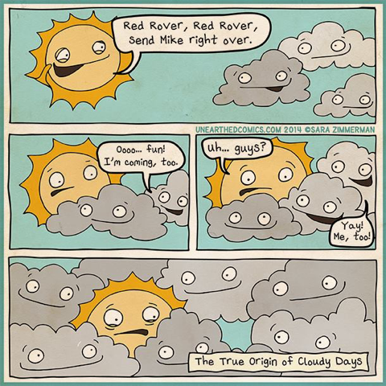
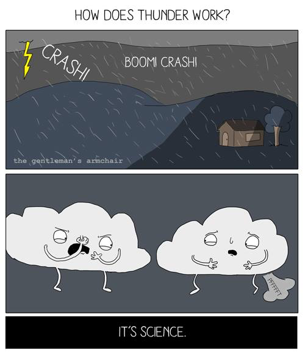

Matthew 16:3
And in the morning, ‘It will be stormy today, for the sky is red and threatening.’
You know how to interpret the appearance of the sky, but you cannot interpret the signs of the times.
Assignments this week (click me!)
Student Notebook hyperlinks for module 8:
p. 100 in the SNB: link.apologia.com/ECPS2N/8.1 Tornados webpage by Weather Whiz Kids
p. 100 in the SNB: link.apologia.com/ECPS2N/8.2 Hurricanes webpage by Weather Whiz Kids
Required Videos and Links:
Will be added soon.
Optional but Helpful:
Vocabulary Flashcards on Quizlet
Module 8 flash cards

